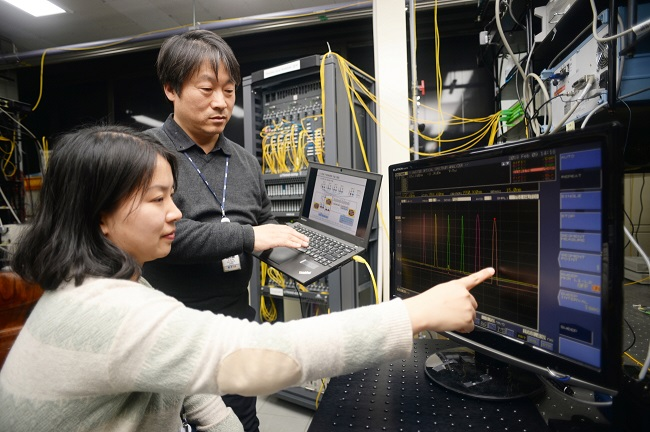

- ETRI, SDN 광스위치 개발
채널폭 유연하게 조절해 광통신 똑똑하게 만든다 - 그동안 광네트워크 장비는 제조사마다 달라 장비에 따른 SW도 별도 관리해야 함에 따라 운용도 어렵고 비용도 많이 들었다. 국내 연구진이 이러한 문제점을 해결한 광스위치 개발에 성공했다. 한국전자통신연구원(ETRI)은 폭발적으로 증가하는 광통신 네트워크의 대용량 데이터 수용과 지능적 제어를 위해 광스위칭 시스템인 로뎀(ROADM)용 핵심부품을 개발했다. 연구진은 효율적인 광스위칭 시스템 개발을 위해 소프트웨어로 제어가 가능한 핵심 부품을 만들어 장비화해 네트워크를 구성했다. 이로써 더욱 똑똑한 소프트웨어 정의 네트워크(SDN)에 활용이 가능해졌다고 설명했다.
- ETRI 2018.04.03 자세히보기